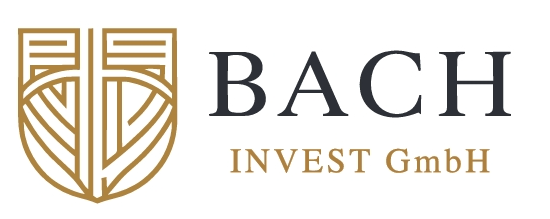

Unsere neue Online-Präsenz ist in Vorbereitung.
Die Bach Invest GmbH überarbeitet derzeit ihren Webauftritt. Für Anfragen stehen wir Ihnen selbstverständlich auch jetzt persönlich zur Verfügung.

Die Bach Invest GmbH überarbeitet derzeit ihren Webauftritt. Für Anfragen stehen wir Ihnen selbstverständlich auch jetzt persönlich zur Verfügung.